Table of Contents
1 Security
1.1 Data Link Layer
1.1.1 DHCP-snooping
作用: 抵御DHCP地址池耗尽的攻击(保护合法的 DHCP 服务器)
1.1.2 PVLAN(Private VLAN)
1.1.3 DAI
1.1.4 IP source Guard
1.1.5 ACL+route-map(策略工具)
- ACL
作用: 标记流量或者路由条目(为策略实施做准备)
特点:
- 一系列的运行和拒绝条目的集合
- 从上至下依次匹配
- 一旦匹配将不再往下执行
- 任何ACL最后都有一条默认隐含的拒绝条目!
强烈建议的配置:
access-list 1 deny any log - 自身发起的流量将不接受 ACL 的控制, 解决方案(PBR, policy-base routing)
种类:
- IPv4
- IPv6
- 2层(MAC-ACL)
表示方式:
- 标准: 只匹配(检查)源(靠近目的位置调用)
- 数字: 1-99
- 命名: 符合命名字符串的要求
- 扩展: 可以匹配源目IP、源目接口以及协议(靠近源的位置调用)
- 数字: 100-199
- 命名: 符合命名字符串的要求
调用规则: 在接口下 IN/OUT 方向皆可调用 ACL(根据网络具体环境) 严重提醒：相同的方向、相同接口只能调用一个相同类型的ACL
- route-map
概述: Route maps are similar to a scripting language for these reasons:
- They work like a more sophisticated access list
- They offer top-down processing
- Once there is a match, leave the route map
- Lines are sequence-numbered for easier editing
- Insertion of lines
- Deletion of lines
- Route maps are named rather than numbered for easier documentation
- Match criteria and set criteria can be used, similar to the "if, then" logic in a scripting language
作用: The common uses of route maps are as follows:
- Redistribution route filtering: a more sophisticated alternative to distribute lists
- Policy-based routeing: the ability to determine routing policy based on criteria other than the destination network
- BGP policy implementation: the primary tool for defining BGP routing policies
规则:
|----------------------------| | route-map my_bgp permit 10 | | match ip address x y z | | ----> | | Logical OR | |----------------------------| |--------------------------------| | route-map my_bgp deny 20 | | | | | Logical | match ...a | | AND | match ...b | | v match ...c | |--------------------------------|
注: 和 ACL 类似, 默认有 deny 语句
route-map xx per 10 route-map xx per 20 route-map xx deny 30---default
如果是一个空 map(match any/set nothing)
- They work like a more sophisticated access list
- Prefix-list(前缀列表)
作用: 只能 标记路由条目
特点:
- 只能匹配路由
- 前缀列表既可以匹配网络号，也可以匹配掩码
2 experiment
2.1 CA-L2L-VPN
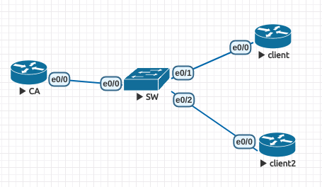
Figure 1: Topology
需求:
- 证书认证的 L2L-VPN
- client 在线申请
- client2 离线申请
配置:
- 接口配置
CA:
interface Ethernet0/0 ip address 10.1.1.10 255.255.255.0
client:
interface Loopback1 ip address 1.1.1.1 255.255.255.0 interface Ethernet0/0 ip address 10.1.1.1 255.255.255.0
client2:
interface Loopback1 ip address 2.2.2.2 255.255.255.0 interface Ethernet0/0 ip address 10.1.1.2 255.255.255.0
- 配置 NTP 服务器
CA:
! clock timezone UTC +8 ! ntp authentication-key 1 md5 cisco ntp authenticate ntp trusted-key 1 ntp master
client:
! clock timezone UTC +8 ! ntp authentication-key 1 md5 cisco ntp authenticate ntp trusted-key 1 ntp server 10.1.1.10 key 1
状态:
client#show ntp status Clock is synchronized, stratum 9, reference is 10.1.1.10 nominal freq is 250.0000 Hz, actual freq is 250.0000 Hz, precision is 2**10 ntp uptime is 8200 (1/100 of seconds), resolution is 4000 reference time is DF7BDE4D.31EB85A8 (14:16:45.195 UTC Thu Oct 25 2018) clock offset is 0.0000 msec, root delay is 2.00 msec root dispersion is 7941.77 msec, peer dispersion is 7938.47 msec loopfilter state is 'CTRL' (Normal Controlled Loop), drift is 0.000000000 s/s system poll interval is 64, last update was 1 sec ago.
client2:
! clock timezone UTC +8 ! ntp authentication-key 1 md5 cisco ntp authenticate ntp trusted-key 1 ntp server 10.1.1.10 key 1
状态:
client2#show ntp status Clock is synchronized, stratum 9, reference is 10.1.1.10 nominal freq is 250.0000 Hz, actual freq is 250.0000 Hz, precision is 2**10 ntp uptime is 19000 (1/100 of seconds), resolution is 4000 reference time is DF7BDF2F.78106398 (14:20:31.469 UTC Thu Oct 25 2018) clock offset is 0.0000 msec, root delay is 2.00 msec root dispersion is 68.84 msec, peer dispersion is 64.87 msec loopfilter state is 'CTRL' (Normal Controlled Loop), drift is 0.000000000 s/s system poll interval is 64, last update was 44 sec ago.
架设证书服务器(CA)
! ip http server ! ip domain name cumt.edu ! crypto pki server CA issuer-name cn=CA.cumt.edu, o=cumt, ou=xuhai, l=xuzhou lifetime certificate 180 lifetime ca-certificate 365 no shutdown
状态:
CA Certificate Status: Available Certificate Serial Number (hex): 01 Certificate Usage: Signature Issuer: cn=CA.cumt.edu o=cumt ou=xuhai l=xuzhou Subject: cn=CA.cumt.edu o=cumt ou=xuhai l=xuzhou Validity Date: start date: 14:21:06 UTC Oct 25 2018 end date: 14:21:06 UTC Oct 25 2019 Associated Trustpoints: CA- 在线申请证书(client)
配置信任点:
crypto pki trustpoint client enrollment url http://10.1.1.10:80 subject-name cn=client.cumt.edu, o=cumt, ou=xuhai.client, l=xuzhou revocation-check crl
认证证书服务器
client(config)#crypto pki authenticate client Certificate has the following attributes: Fingerprint MD5: 0D02F0B1 AA0928C3 A9A02440 0D976E67 Fingerprint SHA1: C4E724FD B6664E5B 45351364 D665C8C2 5CEBA4C1 % Do you accept this certificate? [yes/no]: yes Trustpoint CA certificate accepted.申请个人证书
client(config)#crypto pki enroll client % % Start certificate enrollment .. % Create a challenge password. You will need to verbally provide this password to the CA Administrator in order to revoke your certificate. For security reasons your password will not be saved in the configuration. Please make a note of it. Password: Re-enter password: % The subject name in the certificate will include: cn=client.cumt.edu, o=cumt, ou=xuhai.client, l=xuzhou % The subject name in the certificate will include: client.cumt.edu % Include the router serial number in the subject name? [yes/no]: yes % The serial number in the certificate will be: 67108912 % Include an IP address in the subject name? [no]: no Request certificate from CA? [yes/no]: yes % Certificate request sent to Certificate Authority % The 'show crypto pki certificate verbose client' commandwill show the fingerprint.
CA 下发个人证书
crypto pki server CA grant all
client 查看证书
Oct 25 06:30:32.576: %PKI-6-CERTRET: Certificate received from Certificate Authority client(config)#do sho crypto pki certificates CA Certificate Status: Available Certificate Serial Number (hex): 01 Certificate Usage: Signature Issuer: cn=CA.cumt.edu o=cumt ou=xuhai l=xuzhou Subject: cn=CA.cumt.edu o=cumt ou=xuhai l=xuzhou Validity Date: start date: 14:21:06 UTC Oct 25 2018 end date: 14:21:06 UTC Oct 25 2019 Associated Trustpoints: client Certificate Subject: Name: client.cumt.edu Serial Number: 67108912 Status: Pending Key Usage: General Purpose Certificate Request Fingerprint MD5: B437E97F B378CB30 254E849B 59ED5910 Certificate Request Fingerprint SHA1: 89314932 E4D30B0D 13E427C5 8A8DA19B 7F14FF4D Associated Trustpoint: client
- 离线申请证书(client2)
配置信任点
crypto pki trustpoint client2 enrollment terminal subject-name cn=client2.cumt.edu, o=cumt, ou=xuhai.client2, l=xuzhou revocation-check none
- 认证证书服务器
CA 导出根证书
CA(config)#crypto pki export CA pem terminal % The specified trustpoint is not enrolled (CA). % Only export the CA certificate in PEM format. % CA certificate: -----BEGIN CERTIFICATE----- MIICZTCCAc6gAwIBAgIBATANBgkqhkiG9w0BAQQFADBGMQ8wDQYDVQQHEwZ4dXpo b3UxDjAMBgNVBAsTBXh1aGFpMQ0wCwYDVQQKEwRjdW10MRQwEgYDVQQDEwtDQS5j dW10LmVkdTAeFw0xODEwMjUwNjIxMDZaFw0xOTEwMjUwNjIxMDZaMEYxDzANBgNV BAcTBnh1emhvdTEOMAwGA1UECxMFeHVoYWkxDTALBgNVBAoTBGN1bXQxFDASBgNV BAMTC0NBLmN1bXQuZWR1MIGfMA0GCSqGSIb3DQEBAQUAA4GNADCBiQKBgQCwOr7J FwBiGLrx6idmID0wr3zjSI2wrkTOlCnlRKxLvg6nMvngmrhj+BOr3FvHP1Cpijpp nG0mBtfsyNPysb/dhblhFk/d7jRgEuT7EFo4E0wBEQniSlxElF4x3gfTZcnD3Fx6 wpqkAjTYBzSCvxc5zJNcuZVDhM/Y155Xx/KG+QIDAQABo2MwYTAPBgNVHRMBAf8E BTADAQH/MA4GA1UdDwEB/wQEAwIBhjAfBgNVHSMEGDAWgBTIk8/sCQqlCeOPCGq2 9A44vr2+VjAdBgNVHQ4EFgQUyJPP7AkKpQnjjwhqtvQOOL69vlYwDQYJKoZIhvcN AQEEBQADgYEAN9tvZlERtKlRQ+XjtZpI2jix/sO0muiigq4Y8AN/U+GJzRGdBn8z 0jX835QmP+Yymw9SM/qb1SiPshqEYxIg5YmL9UDoupzpMkM+UJPDAWk7/4HE3L/p i9O/JIMWdeaNGBMco9B4toiX4BdAsHae4Nf0LGI+iPfTLNkHc2zBm20= -----END CERTIFICATE-----
客户端认证证书服务器
client2(config)#crypto pki authenticate client2 Enter the base 64 encoded CA certificate. End with a blank line or the word "quit" on a line by itself -----BEGIN CERTIFICATE----- MIICZTCCAc6gAwIBAgIBATANBgkqhkiG9w0BAQQFADBGMQ8wDQYDVQQHEwZ4dXpo b3UxDjAMBgNVBAsTBXh1aGFpMQ0wCwYDVQQKEwRjdW10MRQwEgYDVQQDEwtDQS5j dW10LmVkdTAeFw0xODEwMjUwNjIxMDZaFw0xOTEwMjUwNjIxMDZaMEYxDzANBgNV BAcTBnh1emhvdTEOMAwGA1UECxMFeHVoYWkxDTALBgNVBAoTBGN1bXQxFDASBgNV BAMTC0NBLmN1bXQuZWR1MIGfMA0GCSqGSIb3DQEBAQUAA4GNADCBiQKBgQCwOr7J FwBiGLrx6idmID0wr3zjSI2wrkTOlCnlRKxLvg6nMvngmrhj+BOr3FvHP1Cpijpp nG0mBtfsyNPysb/dhblhFk/d7jRgEuT7EFo4E0wBEQniSlxElF4x3gfTZcnD3Fx6 wpqkAjTYBzSCvxc5zJNcuZVDhM/Y155Xx/KG+QIDAQABo2MwYTAPBgNVHRMBAf8E BTADAQH/MA4GA1UdDwEB/wQEAwIBhjAfBgNVHSMEGDAWgBTIk8/sCQqlCeOPCGq2 9A44vr2+VjAdBgNVHQ4EFgQUyJPP7AkKpQnjjwhqtvQOOL69vlYwDQYJKoZIhvcN AQEEBQADgYEAN9tvZlERtKlRQ+XjtZpI2jix/sO0muiigq4Y8AN/U+GJzRGdBn8z 0jX835QmP+Yymw9SM/qb1SiPshqEYxIg5YmL9UDoupzpMkM+UJPDAWk7/4HE3L/p i9O/JIMWdeaNGBMco9B4toiX4BdAsHae4Nf0LGI+iPfTLNkHc2zBm20= -----END CERTIFICATE----- Certificate has the following attributes: Fingerprint MD5: 0D02F0B1 AA0928C3 A9A02440 0D976E67 Fingerprint SHA1: C4E724FD B6664E5B 45351364 D665C8C2 5CEBA4C1 % Do you accept this certificate? [yes/no]: yes Trustpoint CA certificate accepted. % Certificate successfully imported查看根证书
client2(config)#do sho cry pki cer CA Certificate Status: Available Certificate Serial Number (hex): 01 Certificate Usage: Signature Issuer: cn=CA.cumt.edu o=cumt ou=xuhai l=xuzhou Subject: cn=CA.cumt.edu o=cumt ou=xuhai l=xuzhou Validity Date: start date: 14:21:06 UTC Oct 25 2018 end date: 14:21:06 UTC Oct 25 2019 Associated Trustpoints: client2
- 申请个人证书
client2 导出个人信息
client2(config)#crypto pki enroll client2 % Start certificate enrollment .. % The subject name in the certificate will include: cn=client2.cumt.edu, o=cumt, ou=xuhai.client2, l=xuzhou % The subject name in the certificate will include: client2 % Include the router serial number in the subject name? [yes/no]: % Please answer 'yes' or 'no'. % Include the router serial number in the subject name? [yes/no]: yes % The serial number in the certificate will be: 67108896 % Include an IP address in the subject name? [no]: no Display Certificate Request to terminal? [yes/no]: yes Certificate Request follows: MIIBWDCCAQICAQAwfDEPMA0GA1UEBxMGeHV6aG91MRYwFAYDVQQLEw14dWhhaS5j bGllbnQyMQ0wCwYDVQQKEwRjdW10MRkwFwYDVQQDExBjbGllbnQyLmN1bXQuZWR1 MScwDwYDVQQFEwg2NzEwODg5NjAUBgkqhkiG9w0BCQIWB2NsaWVudDIwXDANBgkq hkiG9w0BAQEFAANLADBIAkEAtYyHVkLFcKDhK+Y1lWgNvdtlcwI5edCIT7YfW2jk tpw8F75kVUlEncVgX6Xz6z2oM0e3KrNMyNUd8/uYEoF6qQIDAQABoCEwHwYJKoZI hvcNAQkOMRIwEDAOBgNVHQ8BAf8EBAMCBaAwDQYJKoZIhvcNAQEFBQADQQBu8wxU lPFkIO2Qp6cYd5L0SIJTy3uSAPOo5Q5cg4pKEn9czqnJ/I1OrYEeT2DBiLcDMAKQ /5UEDUdClr+Lw0cw
CA 加载 client2 个人信息
CA#crypto pki server CA request pkcs10 terminal PKCS10 request in base64 or pem % Enter Base64 encoded or PEM formatted PKCS10 enrollment request. % End with a blank line or "quit" on a line by itself. MIIBWDCCAQICAQAwfDEPMA0GA1UEBxMGeHV6aG91MRYwFAYDVQQLEw14dWhhaS5j bGllbnQyMQ0wCwYDVQQKEwRjdW10MRkwFwYDVQQDExBjbGllbnQyLmN1bXQuZWR1 MScwDwYDVQQFEwg2NzEwODg5NjAUBgkqhkiG9w0BCQIWB2NsaWVudDIwXDANBgkq hkiG9w0BAQEFAANLADBIAkEAtYyHVkLFcKDhK+Y1lWgNvdtlcwI5edCIT7YfW2jk tpw8F75kVUlEncVgX6Xz6z2oM0e3KrNMyNUd8/uYEoF6qQIDAQABoCEwHwYJKoZI hvcNAQkOMRIwEDAOBgNVHQ8BAf8EBAMCBaAwDQYJKoZIhvcNAQEFBQADQQBu8wxU lPFkIO2Qp6cYd5L0SIJTy3uSAPOo5Q5cg4pKEn9czqnJ/I1OrYEeT2DBiLcDMAKQ /5UEDUdClr+Lw0cw % Enrollment request pending, reqId=2
CA 下发证书
CA#crypto pki server CA grant all % Granted certificate: MIICRjCCAa+gAwIBAgIBAzANBgkqhkiG9w0BAQQFADBGMQ8wDQYDVQQHEwZ4dXpo b3UxDjAMBgNVBAsTBXh1aGFpMQ0wCwYDVQQKEwRjdW10MRQwEgYDVQQDEwtDQS5j dW10LmVkdTAeFw0xODEwMjUwNjQyNDVaFw0xOTA0MjMwNjQyNDVaMHwxDzANBgNV BAcTBnh1emhvdTEWMBQGA1UECxMNeHVoYWkuY2xpZW50MjENMAsGA1UEChMEY3Vt dDEZMBcGA1UEAxMQY2xpZW50Mi5jdW10LmVkdTEnMA8GA1UEBRMINjcxMDg4OTYw FAYJKoZIhvcNAQkCFgdjbGllbnQyMFwwDQYJKoZIhvcNAQEBBQADSwAwSAJBALWM h1ZCxXCg4SvmNZVoDb3bZXMCOXnQiE+2H1to5LacPBe+ZFVJRJ3FYF+l8+s9qDNH tyqzTMjVHfP7mBKBeqkCAwEAAaNSMFAwDgYDVR0PAQH/BAQDAgWgMB8GA1UdIwQY MBaAFMiTz+wJCqUJ448Iarb0Dji+vb5WMB0GA1UdDgQWBBSt3TJpNmnEm6yCtn88 2hUVU148JjANBgkqhkiG9w0BAQQFAAOBgQB4FspC1vFjWf+uK2uEel/Jkn74L4q+ Til9x/TnFdtGHUPg/are6lib2kMUBl2SbJ1h8xhd5XILHHtyOQs4AC8MCDwxm/1d KYLOF+T1K/tdqJ1YfxU6jCgzbwYK0RoElqjxN1x3VhmP4lf9jPb/FuYoh0NoGMi3 4uu1U5Mn7FWIyQ==
client2 导入个人证书
client2(config)#crypto pki import client2 certificate Enter the base 64 encoded certificate. End with a blank line or the word "quit" on a line by itself MIICRjCCAa+gAwIBAgIBAzANBgkqhkiG9w0BAQQFADBGMQ8wDQYDVQQHEwZ4dXpo b3UxDjAMBgNVBAsTBXh1aGFpMQ0wCwYDVQQKEwRjdW10MRQwEgYDVQQDEwtDQS5j dW10LmVkdTAeFw0xODEwMjUwNjQyNDVaFw0xOTA0MjMwNjQyNDVaMHwxDzANBgNV BAcTBnh1emhvdTEWMBQGA1UECxMNeHVoYWkuY2xpZW50MjENMAsGA1UEChMEY3Vt dDEZMBcGA1UEAxMQY2xpZW50Mi5jdW10LmVkdTEnMA8GA1UEBRMINjcxMDg4OTYw FAYJKoZIhvcNAQkCFgdjbGllbnQyMFwwDQYJKoZIhvcNAQEBBQADSwAwSAJBALWM h1ZCxXCg4SvmNZVoDb3bZXMCOXnQiE+2H1to5LacPBe+ZFVJRJ3FYF+l8+s9qDNH tyqzTMjVHfP7mBKBeqkCAwEAAaNSMFAwDgYDVR0PAQH/BAQDAgWgMB8GA1UdIwQY MBaAFMiTz+wJCqUJ448Iarb0Dji+vb5WMB0GA1UdDgQWBBSt3TJpNmnEm6yCtn88 2hUVU148JjANBgkqhkiG9w0BAQQFAAOBgQB4FspC1vFjWf+uK2uEel/Jkn74L4q+ Til9x/TnFdtGHUPg/are6lib2kMUBl2SbJ1h8xhd5XILHHtyOQs4AC8MCDwxm/1d KYLOF+T1K/tdqJ1YfxU6jCgzbwYK0RoElqjxN1x3VhmP4lf9jPb/FuYoh0NoGMi3 4uu1U5Mn7FWIyQ== % Router Certificate successfully imported
client2 查看证书
client2#show crypto pki certificates Certificate Status: Available Certificate Serial Number (hex): 03 Certificate Usage: General Purpose Issuer: cn=CA.cumt.edu o=cumt ou=xuhai l=xuzhou Subject: Name: client2 Serial Number: 67108896 serialNumber=67108896+hostname=client2 cn=client2.cumt.edu o=cumt ou=xuhai.client2 l=xuzhou Validity Date: start date: 14:42:45 UTC Oct 25 2018 end date: 14:42:45 UTC Apr 23 2019 Associated Trustpoints: client2 CA Certificate Status: Available Certificate Serial Number (hex): 01 Certificate Usage: Signature Issuer: cn=CA.cumt.edu o=cumt ou=xuhai l=xuzhou Subject: cn=CA.cumt.edu o=cumt ou=xuhai l=xuzhou Validity Date: start date: 14:21:06 UTC Oct 25 2018 end date: 14:21:06 UTC Oct 25 2019 Associated Trustpoints: client
- 配置证书认证的 L2L-VPN
client
crypto pki certificate map client.map 10 subject-name co o = cumt crypto isakmp policy 10 crypto isakmp profile isaprof ca trust-point client match certificate client.map crypto ipsec transform-set cisco esp-des esp-md5-hmac crypto map cisco 10 ipsec-isakmp set peer 10.1.1.2 set transform-set cisco set isakmp-profile isaprof match address vpn crypto map cisco ! ip access-list extended vpn permit ip 1.1.1.0 0.0.0.255 2.2.2.0 0.0.0.255 ! interface Ethernet0/0 ip address 10.1.1.1 255.255.255.0 crypto map cisco
client2
crypto pki certificate map client2.map 10 subject-name co cn = client.cumt.edu crypto isakmp policy 10 crypto isakmp profile isaprof ca trust-point client2 match certificate client2.map crypto ipsec transform-set cisco esp-des esp-md5-hmac crypto map cisco 10 ipsec-isakmp set peer 10.1.1.1 set transform-set cisco set isakmp-profile isaprof match address vpn crypto map cisco ! ip access-list extended vpn permit ip 2.2.2.0 0.0.0.255 1.1.1.0 0.0.0.255 ! interface Ethernet0/0 ip address 10.1.1.2 255.255.255.0 crypto map cisco
- 测试连通性: 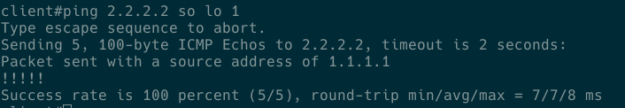
- 查看加解密: 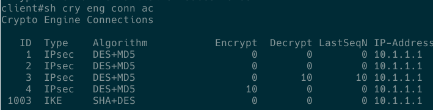
2.2 RRI & DPD
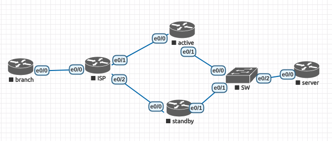
Figure 2: Topology
configure:
branch:
! crypto isakmp policy 10 encr 3des hash md5 authentication pre-share group 2 crypto isakmp key cisco address 202.100.1.1 crypto isakmp key cisco address 61.128.1.2 crypto isakmp keepalive 10 periodic ! crypto ipsec transform-set cisco esp-des esp-md5-hmac ! crypto map cisco 10 ipsec-isakmp set peer 202.100.1.1 default set peer 61.128.1.2 set security-association idle-time 60 set transform-set cisco match address vpn ! interface Loopback1 ip address 1.1.1.1 255.255.255.0 ! interface Ethernet0/0 ip address 11.1.1.1 255.255.255.0 crypto map cisco ! router ospf 110 network 1.1.1.0 0.0.0.255 area 0 network 11.1.1.0 0.0.0.255 area 0 ! ip route 0.0.0.0 0.0.0.0 11.1.1.10 ! ip access-list extended vpn permit ip 1.1.1.0 0.0.0.255 5.5.5.0 0.0.0.255
active:
! crypto isakmp policy 10 encr 3des hash md5 authentication pre-share group 2 crypto isakmp key cisco address 11.1.1.1 crypto isakmp keepalive 10 periodic ! crypto ipsec transform-set cisco esp-des esp-md5-hmac ! crypto map cisco 10 ipsec-isakmp set peer 11.1.1.1 set transform-set cisco set reverse-route tag 10 match address vpn reverse-route ! interface Ethernet0/0 ip address 202.100.1.1 255.255.255.0 crypto map cisco ! interface Ethernet0/1 ip address 10.1.1.1 255.255.255.0 ! router ospf 110 redistribute static subnets route-map RRI network 10.1.1.0 0.0.0.255 area 0 ! ip route 0.0.0.0 0.0.0.0 202.100.1.10 ! ip access-list extended vpn permit ip 5.5.5.0 0.0.0.255 1.1.1.0 0.0.0.255 ! route-map RRI permit 10 match tag 10 !
standby:
! crypto isakmp policy 10 encr 3des hash md5 authentication pre-share group 2 crypto isakmp key cisco address 11.1.1.1 crypto isakmp keepalive 10 periodic ! crypto ipsec transform-set cisco esp-des esp-md5-hmac ! crypto map cisco 10 ipsec-isakmp set peer 11.1.1.1 set transform-set cisco set reverse-route tag 20 match address vpn reverse-route ! interface Ethernet0/0 ip address 61.128.1.2 255.255.255.0 crypto map cisco ! interface Ethernet0/1 ip address 10.1.1.2 255.255.255.0 ! router ospf 110 redistribute static subnets route-map RRI network 10.1.1.0 0.0.0.255 area 0 ! ip route 0.0.0.0 0.0.0.0 61.128.1.10 ! ip access-list extended vpn permit ip 5.5.5.0 0.0.0.255 1.1.1.0 0.0.0.255 ! route-map RRI permit 10 match tag 20
server:
! interface Loopback1 ip address 5.5.5.5 255.255.255.0 ! interface Ethernet0/0 ip address 10.1.1.100 255.255.255.0 ! router ospf 110 network 5.5.5.0 0.0.0.255 area 0 network 10.1.1.0 0.0.0.255 area 0 !
Test redundancy: 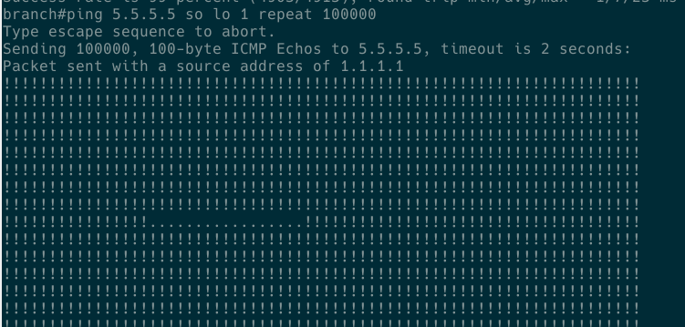
2.3 L2L-redundancy
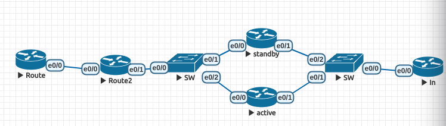
Figure 3: Topology
Configure:
Route:
! crypto isakmp policy 10 encr 3des hash md5 authentication pre-share group 2 crypto isakmp key cisco address 202.1.1.100 crypto isakmp keepalive 10 periodic ! ! crypto ipsec transform-set cisco esp-des esp-md5-hmac ! crypto map cisco 10 ipsec-isakmp set peer 202.1.1.100 set transform-set cisco match address vpn ! interface Loopback1 ip address 1.1.1.1 255.255.255.0 ! interface Ethernet0/0 ip address 192.168.1.100 255.255.255.0 crypto map cisco ! ip route 0.0.0.0 0.0.0.0 192.168.1.10 ! ip access-list extended vpn permit ip 1.1.1.0 0.0.0.255 2.2.2.0 0.0.0.255 !
active:
! crypto isakmp policy 10 encr 3des hash md5 authentication pre-share group 2 crypto isakmp key cisco address 192.168.1.100 crypto isakmp keepalive 10 periodic ! crypto ipsec transform-set cisco esp-des esp-md5-hmac ! crypto map cisco 10 ipsec-isakmp set peer 192.168.1.100 set transform-set cisco set reverse-route tag 100 match address vpn reverse-route static ! interface Ethernet0/0 ip address 202.1.1.1 255.255.255.0 standby 1 ip 202.1.1.100 standby 1 priority 110 standby 1 preempt standby 1 name vpn crypto map cisco redundancy vpn ! interface Ethernet0/1 ip address 10.1.1.1 255.255.255.0 ! router ospf 110 redistribute static subnets route-map vpn network 10.1.1.0 0.0.0.255 area 0 ! ip route 0.0.0.0 0.0.0.0 202.1.1.10 ! ip access-list extended vpn permit ip 2.2.2.0 0.0.0.255 1.1.1.0 0.0.0.255 ! route-map vpn permit 10 match tag 100 !
standby:
! crypto isakmp policy 10 encr 3des hash md5 authentication pre-share group 2 crypto isakmp key cisco address 192.168.1.100 crypto isakmp keepalive 10 periodic ! crypto ipsec transform-set cisco esp-des esp-md5-hmac ! crypto map cisco 10 ipsec-isakmp set peer 192.168.1.100 set transform-set cisco set reverse-route tag 100 match address vpn reverse-route static ! interface Ethernet0/0 ip address 202.1.1.2 255.255.255.0 standby 1 ip 202.1.1.100 standby 1 name vpn crypto map cisco redundancy vpn ! interface Ethernet0/1 ip address 10.1.1.2 255.255.255.0 ! router ospf 110 redistribute static subnets route-map vpn network 10.1.1.0 0.0.0.255 area 0 ! ip route 0.0.0.0 0.0.0.0 202.1.1.10 ! ip access-list extended vpn permit ip 2.2.2.0 0.0.0.255 1.1.1.0 0.0.0.255 ! route-map vpn permit 10 match tag 100 !
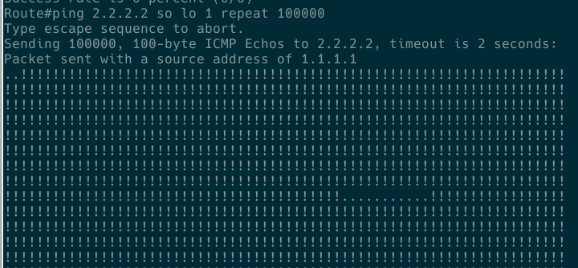
Figure 4: Test redundancy
2.4 VPDN-PPTP
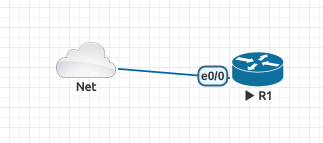
Figure 5: Topology
configure:
R1:
vpdn enable ! vpdn-group 1 ! Default PPTP VPDN group accept-dialin protocol pptp virtual-template 1 ! username pptp password 0 cisco ! interface Loopback1 ip address 10.1.1.1 255.255.255.0 ! interface Ethernet0/0 ip address 172.16.196.111 255.255.255.0 ! ! interface Virtual-Template1 ip unnumbered Loopback1 peer default ip address pool ippool ppp authentication chap ! ip local pool ippool 111.1.1.100 111.1.1.200 !
PC: use
pptp-linuxroot@eve-ng:~# cat /etc/ppp/peers/my_tunnel # written by pptpsetup pty "pptp 172.16.196.111 --nolaunchpppd" lock noauth nobsdcomp nodeflate name pptp remotename my_tunnel ipparam my_tunnel # require-mppe-128 root@eve-ng:/etc/ppp/peers# cat /etc/ppp/chap-secrets # Secrets for authentication using CHAP # client server secret IP addresses # added by pptpsetup for my_tunnel pptp my_tunnel "cisco" *
Test: 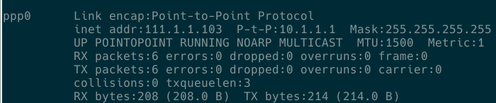
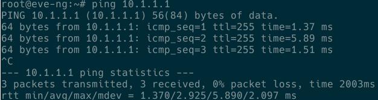
2.5 VPDN-pppoe
Figure 7: Topology
configure:
R1:
vpdn enable ! username pppoe password 0 cisco ! bba-group pppoe global virtual-template 1 ! interface Loopback0 ip address 10.1.1.1 255.255.255.0 ! interface Virtual-Template1 ip unnumbered Loopback0 peer default ip address pool ippool ppp authentication pap ! ip local pool ippool 202.100.2.100 202.100.2.200 !
PC:
root@eve-ng:/etc/ppp/peers# cat /etc/ppp/peers/dsl-provider # Minimalistic default options file for DSL/PPPoE connections noipdefault defaultroute replacedefaultroute hide-password #lcp-echo-interval 30 #lcp-echo-failure 4 noauth persist #mtu 1492 #persist #maxfail 0 #holdoff 20 plugin rp-pppoe.so nic-pnet1 user "pppoe" usepeerdns root@eve-ng:/etc/ppp/peers# cat /etc/ppp/chap-secrets # Secrets for authentication using CHAP # client server secret IP addresses # added by pptpsetup for my_tunnel "pppoe" * "cisco"
Test: 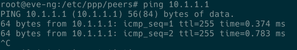 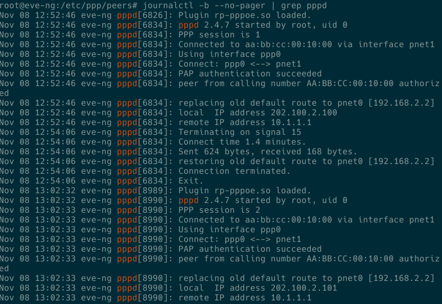
2.6 VPDN-L2TP
Figure 8: Topology
configure:
R1:
vpdn enable ! vpdn-group 1 ! Default L2TP VPDN group accept-dialin protocol l2tp virtual-template 1 no l2tp tunnel authentication ! username cisco password 0 cisco ! interface Loopback0 ip address 10.1.1.1 255.255.255.0 ! interface FastEthernet0/0 ip address 172.16.196.111 255.255.255.0 ! interface Virtual-Template1 ip unnumbered Loopback0 peer default ip address pool test ppp authentication ms-chap ! ip local pool test 10.1.1.2 10.1.1.100
- PC: 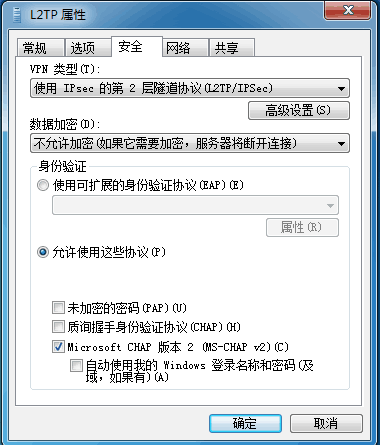 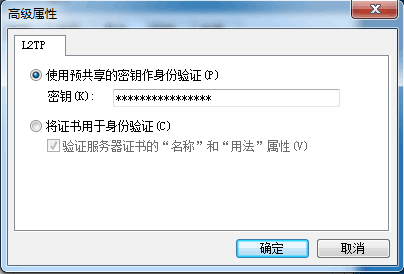
Test: 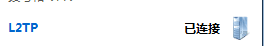
2.7 EZVPN
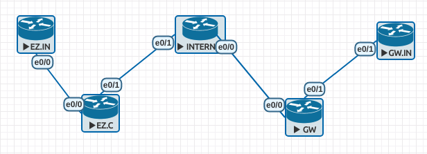 Configure:
EZ.IN:
interface Ethernet0/0 ip address 10.1.1.100 255.255.255.0 ! ip route 0.0.0.0 0.0.0.0 10.1.1.1
EZ.C:
! crypto ipsec client ezvpn cisco connect manual group ipsecgroup key cisco mode client peer 202.100.2.1 xauth userid mode interactive ! interface Loopback0 ip address 123.1.1.101 255.255.255.255 ! interface Ethernet0/0 ip address 10.1.1.1 255.255.255.0 crypto ipsec client ezvpn cisco inside ! interface Ethernet0/1 ip address 202.100.1.1 255.255.255.0 crypto ipsec client ezvpn cisco ! ip route 0.0.0.0 0.0.0.0 202.100.1.100
INTERNET:
interface Ethernet0/0 ip address 202.100.2.100 255.255.255.0 ! interface Ethernet0/1 ip address 202.100.1.100 255.255.255.0
GW:
aaa new-model ! aaa authentication login noacs line none aaa authentication login remote local aaa authorization network remote local ! username remote password 0 cisco ! crypto isakmp policy 10 encr 3des hash md5 authentication pre-share group 2 ! crypto isakmp client configuration group ipsecgroup key cisco pool ippool acl 101(tunnel split) crypto isakmp profile cisco match identity group ipsecgroup client authentication list remote isakmp authorization list remote client configuration address respond ! crypto ipsec transform-set cisco esp-des esp-md5-hmac mode tunnel ! crypto dynamic-map cisco 10 set transform-set cisco set isakmp-profile cisco reverse-route ! crypto map cisco 10 ipsec-isakmp dynamic cisco ! interface Ethernet0/0 ip address 202.100.2.1 255.255.255.0 crypto map cisco ! interface Ethernet0/1 ip address 192.168.1.1 255.255.255.0 ! ip local pool ippool 123.1.1.100 123.1.1.200 ! ip route 0.0.0.0 0.0.0.0 202.100.2.100 ! access-list 101 permit ip 192.168.1.0 0.0.0.255 any !
GW.IN:
! interface Ethernet0/1 ip address 192.168.1.100 255.255.255.0 ! ip route 0.0.0.0 0.0.0.0 192.168.1.1
Test:
connect vpn
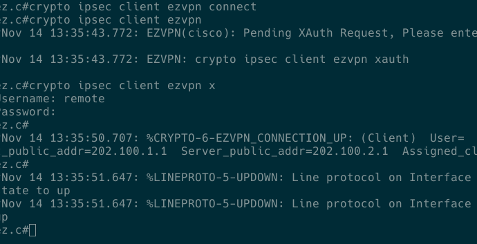
check connect status
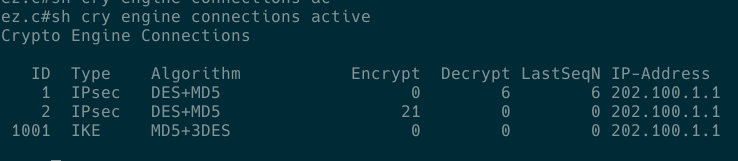
check pat
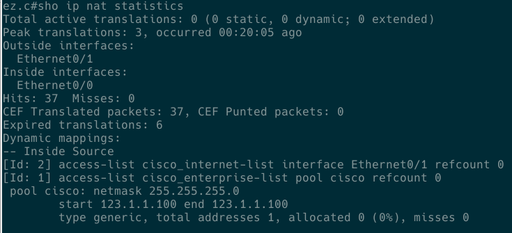
ping(tunnel split)
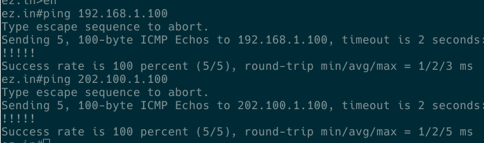
ping
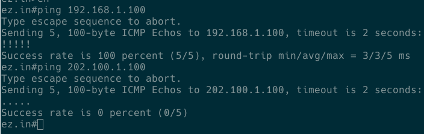
2.8 DMVPN
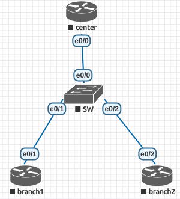
Figure 14: Topology
Configure:
center:
! crypto isakmp policy 10 authentication pre-share crypto isakmp key cisco address 0.0.0.0 ! crypto ipsec transform-set cisco esp-des esp-md5-hmac mode transport ! crypto ipsec profile ipsecprof set transform-set cisco ! interface Loopback0 ip address 192.168.100.1 255.255.255.0 ! interface Tunnel0 ip address 172.16.1.100 255.255.255.0 no ip redirects ip mtu 1400 no ip next-hop-self eigrp 100 no ip split-horizon eigrp 100 ip nhrp authentication cisco ip nhrp map multicast dynamic ip nhrp network-id 10 tunnel source Ethernet0/0 tunnel mode gre multipoint tunnel key 12345 tunnel protection ipsec profile ipsecprof ! interface Ethernet0/0 ip address 202.100.1.100 255.255.255.0 ! router eigrp 100 network 172.16.1.0 0.0.0.255 network 192.168.100.0 !
branch1
! crypto isakmp policy 10 authentication pre-share crypto isakmp key cisco address 0.0.0.0 ! crypto ipsec transform-set cisco esp-des esp-md5-hmac mode transport ! crypto ipsec profile ipsecprof set transform-set cisco ! interface Loopback0 ip address 192.168.1.1 255.255.255.0 ! interface Tunnel0 ip address 172.16.1.1 255.255.255.0 no ip redirects ip mtu 1400 ip nhrp authentication cisco ip nhrp map 172.16.1.100 202.100.1.100 ip nhrp map multicast 202.100.1.100 ip nhrp network-id 10 ip nhrp nhs 172.16.1.100 tunnel source Ethernet0/1 tunnel mode gre multipoint tunnel key 12345 tunnel protection ipsec profile ipsecprof ! interface Ethernet0/1 ip address 202.100.1.1 255.255.255.0 ! router eigrp 100 network 172.16.1.0 0.0.0.255 network 192.168.1.0 !
branch2
! crypto isakmp policy 10 authentication pre-share crypto isakmp key cisco address 0.0.0.0 ! crypto ipsec transform-set cisco esp-des esp-md5-hmac mode transport ! crypto ipsec profile ipsecprof set transform-set cisco ! interface Loopback0 ip address 192.168.2.1 255.255.255.0 ! interface Tunnel0 ip address 172.16.1.2 255.255.255.0 no ip redirects ip mtu 1400 ip nhrp authentication cisco ip nhrp map 172.16.1.100 202.100.1.100 ip nhrp map multicast 202.100.1.100 ip nhrp network-id 10 ip nhrp nhs 172.16.1.100 tunnel source Ethernet0/2 tunnel mode gre multipoint tunnel key 12345 tunnel protection ipsec profile ipsecprof ! interface Ethernet0/2 ip address 202.100.1.2 255.255.255.0 ! router eigrp 100 network 172.16.1.0 0.0.0.255 network 192.168.2.0 !
Test: 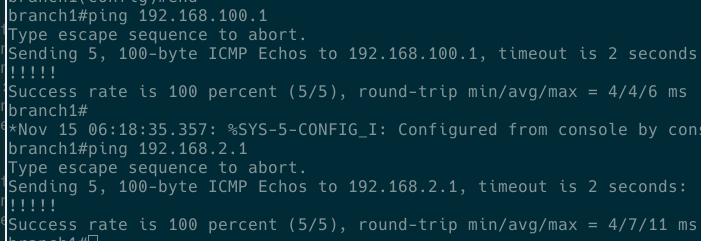
2.9 EZVPN-SOFTWARE
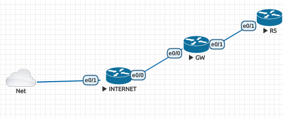
Figure 15: Topology
Configure:
internet:
interface Ethernet0/0 ip address 202.100.2.100 255.255.255.0 interface Ethernet0/1 ip address 172.16.196.100 255.255.255.
GW:
! aaa new-model ! aaa authentication login noacs line none aaa authentication login remote local aaa authorization network remote local ! username remote password 0 cisco ! crypto isakmp policy 10 encr 3des hash md5 authentication pre-share group 2 ! crypto isakmp client configuration group ipsecgroup key cisco pool ippool crypto isakmp profile cisco match identity group ipsecgroup client authentication list remote isakmp authorization list remote client configuration address respond ! crypto ipsec transform-set cisco esp-des esp-md5-hmac mode tunnel ! crypto dynamic-map cisco 10 set transform-set cisco set isakmp-profile cisco reverse-route ! crypto map cisco 10 ipsec-isakmp dynamic cisco ! interface Ethernet0/0 ip address 202.100.2.1 255.255.255.0 crypto map cisco ! interface Ethernet0/1 ip address 192.168.1.1 255.255.255.0 ! ip local pool ippool 123.1.1.100 123.1.1.200 ! ip route 0.0.0.0 0.0.0.0 202.100.2.100 ! access-list 101 permit ip 192.168.1.0 0.0.0.255 any ! line con 0 login authentication noacs line aux 0 login authentication noacs !
R5:
! interface Ethernet0/1 ip address 192.168.1.100 255.255.255.0 ! ip route 0.0.0.0 0.0.0.0 192.168.1.1
Client:
IPSec gateway 202.100.2.1 IPSec ID ipsecgroup IPSec secret cisco Xauth username remote Xauth password cisco
Test: 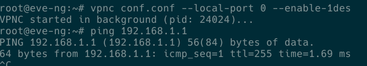
2.10 uRPF
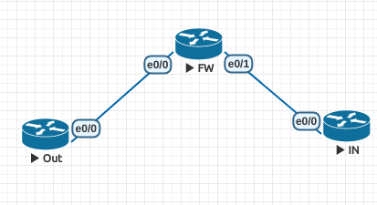
Figure 16: Topology
Configure:
Out:
interface Loopback0 ip address 1.1.1.1 255.255.255.255 interface Ethernet0/0 ip address 202.100.1.1 255.255.255.0
FW:
ip verify drop-rate compute window 60 ip verify drop-rate compute interval 45 ip verify drop-rate notify hold-down 40 ! interface Ethernet0/0 ip address 202.100.1.10 255.255.255.0 ip verify unicast source reachable-via rx allow-default allow-self-ping 100 ! interface Ethernet0/1 ip address 10.1.1.10 255.255.255.0 ip verify unicast source reachable-via any 101 ip verify unicast notification threshold 100 snmp trap ip verify drop-rate ! access-list 100 permit ip host 1.1.1.1 any access-list 100 deny ip any any log-input access-list 101 deny ip any any log-input
IN:
interface Ethernet0/0 ip address 10.1.1.1 255.255.255.0
Test: 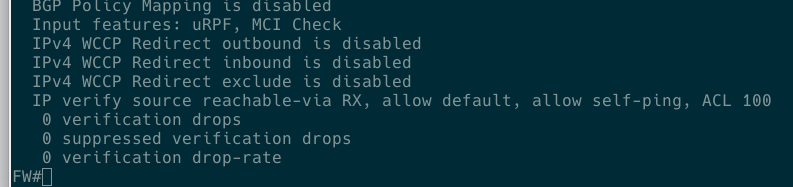
2.11 CoPP
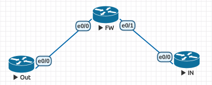
Figure 17: Topology
Configure: network control
Out:
interface Ethernet0/0 ip address 202.100.1.1 255.255.255.0
FW:
! interface Ethernet0/0 ip address 202.100.1.10 255.255.255.0 ! interface Ethernet0/1 ip address 10.1.1.10 255.255.255.0 ! ip access-list extended control.telnet.ssh deny tcp 202.100.1.0 0.0.0.255 any eq telnet deny tcp 202.100.1.0 0.0.0.255 any eq 22 permit tcp any any eq telnet permit tcp any any eq 22 ! control-plane service-policy input CUMT.CoPP ! line vty 0 4 password cisco login transport input telnet
IN:
interface Ethernet0/0 ip address 10.1.1.1 255.255.255.0
Test(network control): 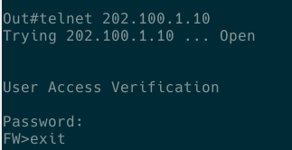 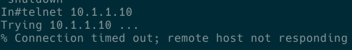
Configure: flow control FW:
class-map match-all control.ICMP match access-group name control.ICMP ! ip access-list extended control.ICMP permit icmp any any ! olicy-map CUMT.CoPP class control.ICMP police rate 1 pps burst 1 packets
Test(flow control): 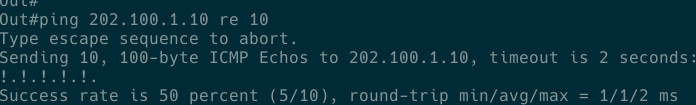
2.12 Basic-Zone-Policy
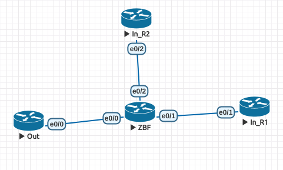
Figure 18: Topology
Configure:
Out:
! interface Ethernet0/0 no shutdown ip address 202.100.1.1 255.255.255.0 ! ip route 0.0.0.0 0.0.0.0 202.100.1.10
ZBF:
! ip cef ! class-map type inspect match-all Out-to-In.telnet.class match access-group name Out-to-In.telnet.traffic class-map type inspect match-any In-to-Out.protocol match protocol udp match protocol tcp match protocol ftp match protocol dns class-map type inspect match-all In-to-Out.ICMP match protocol icmp ! policy-map type inspect In-to-Out.policy class type inspect In-to-Out.protocol inspect class type inspect In-to-Out.ICMP inspect police rate 8000 burst 1000 class class-default drop log policy-map type inspect Out-to-In.policy class type inspect Out-to-In.telnet.class inspect class class-default drop log ! zone security Inside zone security Outside zone-pair security Inside-to-Outside source Inside destination Outside service-policy type inspect In-to-Out.policy zone-pair security Outside-to-Inside source Outside destination Inside service-policy type inspect Out-to-In.policy ! interface Ethernet0/0 no shutdown ip address 202.100.1.10 255.255.255.0 zone-member security Outside ! interface Ethernet0/1 no shutdown ip address 10.1.1.10 255.255.255.0 zone-member security Inside ! interface Ethernet0/2 no shutdown ip address 172.16.1.10 255.255.255.0 ! ip access-list extended Out-to-In.telnet.traffic permit tcp host 202.100.1.1 host 10.1.1.1 eq telnet
In_R1:
interface Ethernet0/1 no shutdown ip address 10.1.1.1 255.255.255.0 ! ip route 0.0.0.0 0.0.0.0 10.1.1.10 ! line vty 0 4 password cisco login transport input telnet !
In_R2
! interface Ethernet0/2 no shutdown ip address 172.16.1.1 255.255.255.0 ! ip route 0.0.0.0 0.0.0.0 172.16.1.10 !
Test:
- test1:
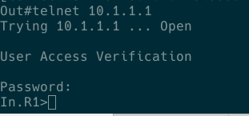 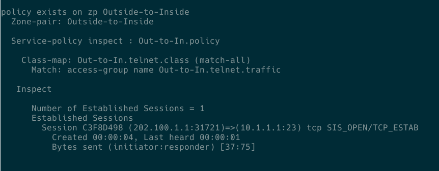
- test2:
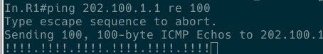
- test3:
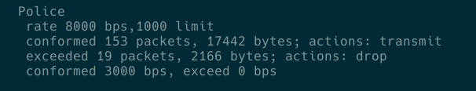
2.13 Basic-Zone-Policy2
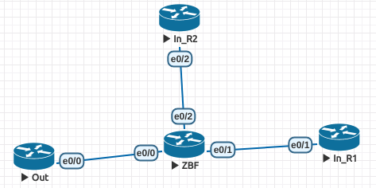
Figure 21: Topology
Configure:
Out:
interface Ethernet0/0 ip address 202.100.1.1 255.255.255.0 ip route 0.0.0.0 0.0.0.0 202.100.1.10
ZBF:
! class-map type inspect match-all Intrazone.class match access-group name Intrazone.traffic ! policy-map type inspect Intrazone.policy class type inspect Intrazone.class inspect class class-default drop log ! zone security Inside zone-pair security Intrazone source Inside destination Inside service-policy type inspect Intrazone.policy ! interface Ethernet0/0 ip address 202.100.1.10 255.255.255.0 ! interface Ethernet0/1 ip address 10.1.1.10 255.255.255.0 zone-member security Inside ! interface Ethernet0/2 ip address 172.16.1.10 255.255.255.0 zone-member security Inside ! ip access-list extended Intrazone.traffic permit tcp host 172.16.1.1 host 10.1.1.1 eq telnet permit tcp host 10.1.1.1 host 172.16.1.1 eq 22 !
In_R1:
interface Ethernet0/1 ip address 10.1.1.1 255.255.255.0 ip route 0.0.0.0 0.0.0.0 10.1.1.10
In_R2:
interface Ethernet0/2 ip address 172.16.1.1 255.255.255.0 ip route 0.0.0.0 0.0.0.0 172.16.1.10
Test:
- telnet: 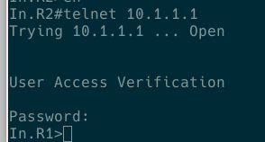 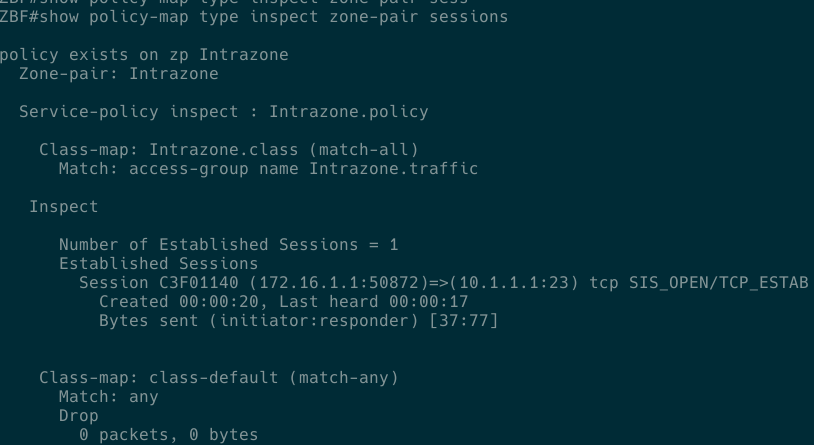
- ssh: 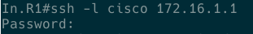 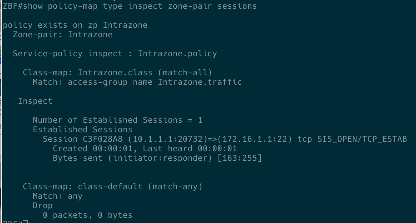
2.14 Basic-Zone-Policy3
Figure 22: Topology
Configure:
Out:
interface Ethernet0/0 ip address 202.100.1.1 255.255.255.0 ip route 0.0.0.0 0.0.0.0 202.100.1.10
ZBF:
! class-map type inspect match-all Self-to-Outside.class match access-group name Self-to-Outside class-map type inspect match-all Self-to-Inside.class match access-group name Self-to-Inside class-map type inspect match-all Inside-to-Self.class match access-group name Inside-to-Self ! policy-map type inspect Self-to-Inside.policy class type inspect Self-to-Inside.class inspect class class-default drop log policy-map type inspect Outside-to-Self.policy class class-default drop log policy-map type inspect Self-to-Outside.policy class type inspect Self-to-Outside.class inspect class class-default drop log policy-map type inspect Inside-to-Self.policy class type inspect Inside-to-Self.class inspect class class-default drop log ! zone security Outside zone security Inside zone-pair security Self-Outside source self destination Outside service-policy type inspect Self-to-Outside.policy zone-pair security Self-Inside source self destination Inside service-policy type inspect Self-to-Inside.policy zone-pair security Inside-Self source Inside destination self service-policy type inspect Inside-to-Self.policy zone-pair security Outside-Self source Outside destination self service-policy type inspect Outside-to-Self.policy ! interface Ethernet0/0 ip address 202.100.1.10 255.255.255.0 zone-member security Outside ! interface Ethernet0/1 ip address 10.1.1.10 255.255.255.0 zone-member security Inside ! interface Ethernet0/2 ip address 172.16.1.10 255.255.255.0 ! ip access-list extended Inside-to-Self permit tcp host 10.1.1.1 host 10.1.1.10 eq 22 ip access-list extended Self-to-Inside permit tcp host 10.1.1.10 host 10.1.1.1 eq telnet ip access-list extended Self-to-Outside permit icmp host 202.100.1.10 host 202.100.1.1 echo !
In_R2:
interface Ethernet0/2 ip address 172.16.1.1 255.255.255.0 ip route 0.0.0.0 0.0.0.0 172.16.1.10
In_R1:
interface Ethernet0/1 ip address 10.1.1.1 255.255.255.0 ip route 0.0.0.0 0.0.0.0 10.1.1.10
Test: ping: 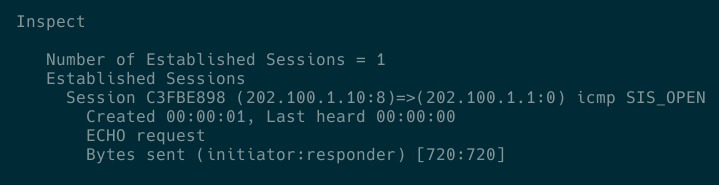
2.15 CBAC
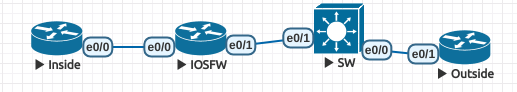
Figure 23: Topology
Demand one: Configure:
Inside:
interface Ethernet0/0 ip address 10.1.1.100 255.255.255.0 ip route 0.0.0.0 0.0.0.0 10.1.1.10
IOS FW:
! ip inspect name FW.Outbound icmp ip inspect name FW.Outbound tcp ip inspect name FW.Outbound udp ! interface Ethernet0/0 ip address 10.1.1.10 255.255.255.0 ip access-group Outbound.traffic in ! interface Ethernet0/1 ip address 202.100.1.10 255.255.255.0 ip access-group Inbound.traffic in ip inspect FW.Outbound out ! ip access-list extended Inbound.traffic deny ip any any ip access-list extended Outbound.traffic permit tcp 10.1.1.0 0.0.0.255 any permit icmp 10.1.1.0 0.0.0.255 any permit udp 10.1.1.0 0.0.0.255 any !
Outside:
interface Ethernet0/1 ip address 202.100.1.100 255.255.255.0 ip route 0.0.0.0 0.0.0.0 202.100.1.10
Test: 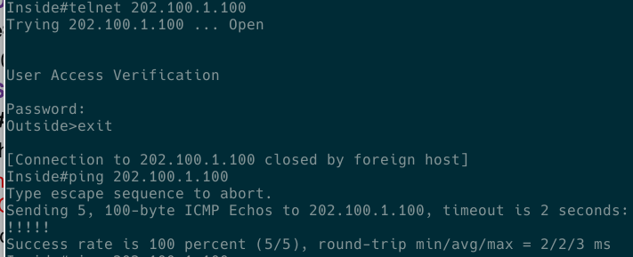 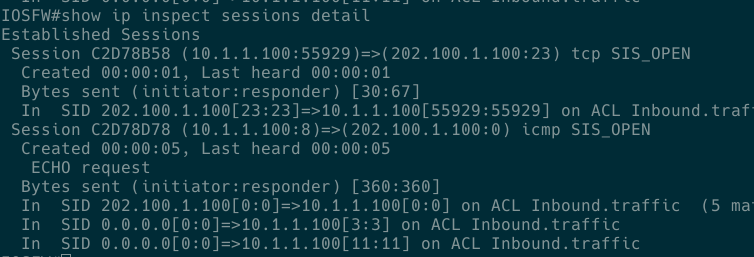
Demand two: Configure: IOS FW
ip access-list extended Inbound.traffic permit tcp 202.100.1.0 0.0.0.255 host 10.1.1.100 eq www deny ip any any ! ip inspect name FW.Inbound http interface Ethernet0/1 ip inspect FW.Inbound in
Test: 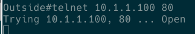 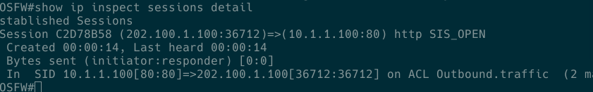